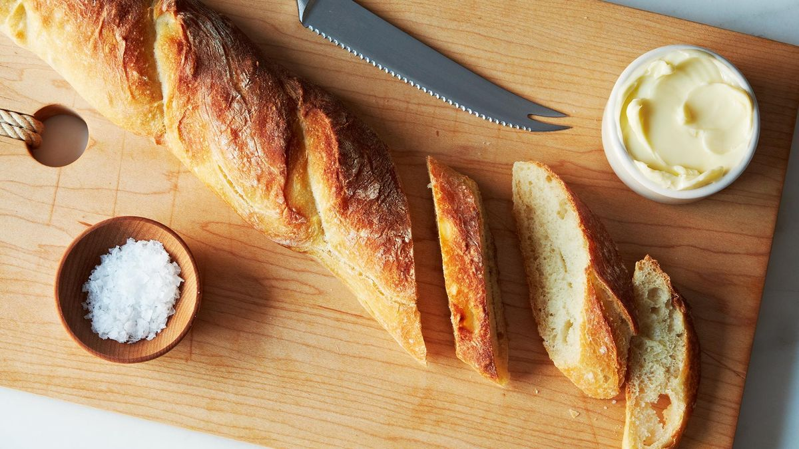

French Baguette
A Classic French Baguette. Crisp on the outside, soft and chewy on the inside.
Best served warm. Can be frozen
Ingredients
- 1.75 ounces warm water (113 F)
- 1.5 tsp yeast
- 15oz bread flour
- 2 tsp kosher salt
- 10 oz cool water
Directions:
-
Measure the warm water in a small bowl and sprinkle the yeast on top.
Set aside and allow the yeast to dissolve and become foamy.
-
Measure the bread flour into a large bowl and stir in the salt.
-
After letting yeast rise, Add the cool water, a little at a time, while stirring,
just until a stiff, shaggy dough
has formed (you may not need to use all of the water).
- Rest for 30 mins
- Shape into rectangle, fold into thirds, rotate and repeate twice
- Rest 2 hours
- Shape into baguettes, cover 45 mins
- Bake at 450 with a pan of boiling water until hollow sounding, about 35 mins
Home